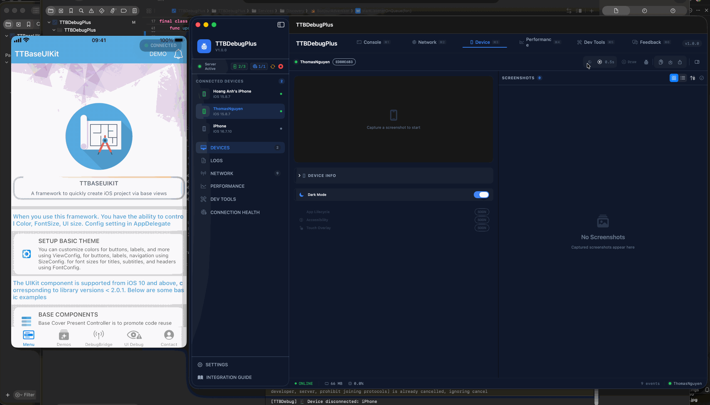

Build
iOS
Apps
Faster.
An ultra-modern enterprise foundation providing 100+ production-ready base views for both UIKit and SwiftUI.
Two Powerful Frameworks, One Kit
Choose your approach or use both. TTBaseUIKit provides consistent architecture for programmatic UIKit and modern SwiftUI.
UIKit Foundation
72+ ComponentsProduction-ready Base Views, ViewControllers, Coordinators, programmatic Auto Layout helpers, Notification/Popup system, and more.
SwiftUI Modernity
51+ ItemsSUIBaseView, advanced declarative layouts, view modifiers, shimmer animations, button styles — all targeting iOS 14+ for maximum compatibility.
Why TTBaseUIKit?
Everything you need to ship faster without sacrificing architecture quality.
Rapid Development
Pre-built components eliminate boilerplate. Build production UI in hours, not days.
Clean Architecture
ViewCodable protocol, Coordinator pattern, and structured lifecycle hooks enforce clean code.
iOS 14+ Compatible
Full compatibility from iOS 14 to latest. No deprecated API worries.
UI Debug Kit
Built-in debug tools: layout inspector, API response viewer, screen capture, and more.
AI Agent Ready
Pre-configured for Copilot, Claude Code, Xcode Agent Skills, Codex, and Gemini.
Configurable Themes
ViewConfig, SizeConfig, FontConfig — control every aspect of your app's appearance globally.
Instant Setup
Add TTBaseUIKit via SPM and configure in your AppDelegate. You're ready in under 5 minutes.
// 1. Add via Swift Package Manager
// https://github.com/tqtuan1201/TTBaseUIKit.git
// 2. Configure in AppDelegate
import TTBaseUIKit
let view = ViewConfig()
view.viewBgNavColor = UIColor.blue
view.buttonBgDef = UIColor.blue
view.viewBgColor = UIColor.white
let size = SizeConfig()
size.H_BUTTON = 44.0
let font = FontConfig()
font.HEADER_H = 16
font.TITLE_H = 14
TTBaseUIKitConfig.withDefaultConfig(
withFontConfig: font,
frameSize: size,
view: view
)?.start(withViewLog: true)TTBDebugPlus
A professional-grade macOS app for debugging iOS applications in real-time. View live console logs, inspect network requests, capture remote screenshots, and monitor performance — all from your Mac with zero configuration.

Run First,
Read Code Later.
The fastest way to learn TTBaseUIKit: clone the example project, run it, explore all 5 tabs with real API demos, debug tools, and 72+ components in action — then study the code.
✨ AI-Powered Development
TTBaseUIKit comes with 17 Copilot agents, 8 shared Agent Skills, 71 prompt templates, and 11 instruction files for AI coding assistants. Dramatically increase code generation accuracy.
See It In Action
From base views to full screens — built entirely with TTBaseUIKit.